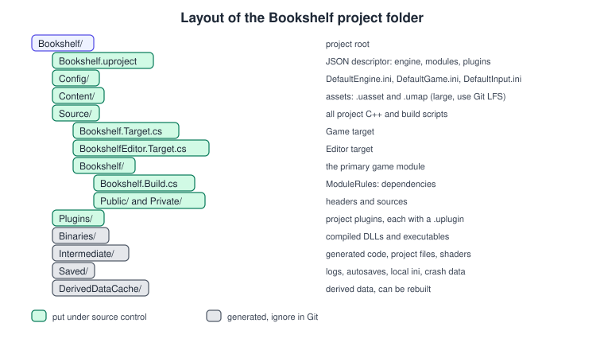
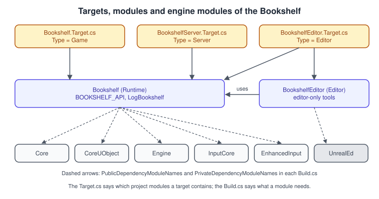
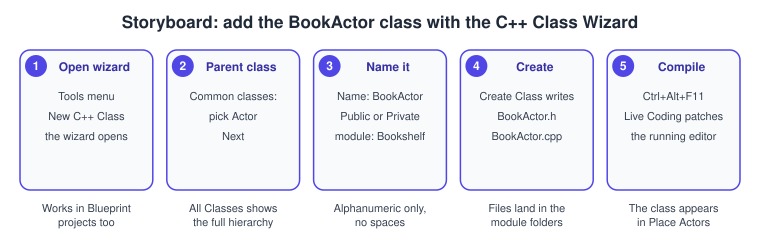
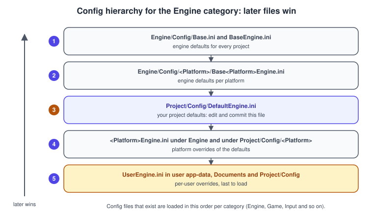

Project Structure and Modules
|
This content was generated with the assistance of AI and should be verified against the official documentation before being relied on in production. |
An Unreal project looks like a folder of assets and a folder of C++, but behind that folder sits a build system with its own vocabulary: modules that compile separately, targets that decide what is built, three tools
that run in a fixed order (UnrealBuildTool, UnrealHeaderTool, UnrealAutomationTool) and a layered set of .ini files that configure everything at run time. Understanding this layout turns most baffling build errors, "why is my
setting ignored" questions and "which files do I commit" questions into one-line answers. It is also where C++ in Unreal differs most from a CMake project, for which see
Program Structure and Compilation and Build and Tooling.
The facts were checked in November 2026 against the Unreal Engine 5.8 documentation (release 5.8, hotfix 5.8.4). The layout and tools are the same on Windows, macOS and Linux; the command lines below use
Windows paths and PowerShell, and the engine ships .sh and .command equivalents of each .bat script. The running example is the Bookshelf project from
Installing and Building from Source: a Third Person template project with a C++ module named Bookshelf, an API macro BOOKSHELF_API, a log category LogBookshelf and later
an editor module. This page writes every file of that module.
The project folder

A project folder is created by the Project Browser and holds a small, fixed set of folders. The first column names the folder, the second what Epic’s directory documentation says it is for, and the third what to do with it in source control.
| Folder or file | Purpose | Source control |
|---|---|---|
|
The project descriptor, a JSON file: which engine, which modules, which plugins and platforms. Opening it launches the editor. |
Commit |
|
The |
Commit |
|
Asset packages ( |
Commit; use Git LFS or Perforce for the large binary files |
|
C++ code, one folder per module, and the |
Commit |
|
Project-local plugins. A plugin differs from a module in that it ships its own source, binaries, a |
Commit (without its |
|
Executables and DLLs produced by compilation. |
Ignore |
|
Temporary files from builds, such as generated code and IDE project files; in a game directory the compiled shaders are stored here. Can be deleted and rebuilt. |
Ignore |
|
Autosaves, local |
Ignore |
|
Derived data generated when referenced content loads, such as compiled shaders and cooked texture data. Missing cache files can greatly increase load times, but nothing is lost. |
Ignore |
The engine’s own folder has the same ideas at a larger scale: Engine/Source is split into Developer (shared by editor and runtime), Editor, Programs (external tools) and Runtime; Engine/Plugins holds engine plugins available to all projects; Engine/Config holds the base .ini files; and Engine/Content holds engine assets. Projects can sit inside the engine root as native projects
or elsewhere on disk as foreign projects; every Launcher project is foreign, and source-built engines also support both. Native projects can be listed in a .uprojectdirs file such as Default.uprojectdirs.
What to put under source control
Everything the table marks "Commit", and nothing marked "Ignore". The following files implement that rule; without Git LFS the repository grows by the size of every revision of every asset.
# .gitignore for an Unreal project
Binaries/
DerivedDataCache/
Intermediate/
Saved/
.vs/
.idea/
*.sln
*.suo
*.xcworkspace
*.xcodeproj
Plugins/*/Binaries/
Plugins/*/Intermediate/# .gitattributes: store large binary assets in Git LFS
*.uasset filter=lfs diff=lfs merge=lfs -text
*.umap filter=lfs diff=lfs merge=lfs -text
*.png filter=lfs diff=lfs merge=lfs -text
*.wav filter=lfs diff=lfs merge=lfs -text
*.glb filter=lfs diff=lfs merge=lfs -textThe shared bookshelf.glb is only the source asset; the imported .uasset files are what the project loads. Unreal assets are binary and cannot be merged, which is why teams use exclusive checkout (Perforce) or the One File Per Actor feature of World Partition (see
World Partition and PCG) to reduce conflicts.
The .uproject file
The descriptor lists the fields FileVersion, EngineAssociation, Category, Description, Modules, Plugins and TargetPlatforms. EngineAssociation holds either a Launcher version number such as "5.8" or the GUID of a source-built editor; right-click the file and choose Switch Unreal Engine version to change it, and Generate Visual Studio project files (or Generate Xcode project files on macOS) to
regenerate IDE files.
{
"FileVersion": 3,
"EngineAssociation": "5.8",
"Category": "",
"Description": "Bookshelf: a tiny game that grows from a book actor into a co-op library.",
"Modules": [
{
"Name": "Bookshelf",
"Type": "Runtime",
"LoadingPhase": "Default"
},
{
"Name": "BookshelfEditor",
"Type": "Editor",
"LoadingPhase": "Default"
}
],
"Plugins": [
{
"Name": "GameplayAbilities",
"Enabled": true
},
{
"Name": "CommonUI",
"Enabled": true
}
],
"TargetPlatforms": [
"Windows",
"Android"
]
}-
Modulescontrols which modules load and how. Regenerating project files adds entries for modules in the dependency chain. Optional filters restrict a module by platform, target, target configuration or program:IncludelistPlatformsandExcludelistPlatforms,IncludelistTargetsandExcludelistTargets,IncludelistTargetConfigurationsandExcludelistTargetConfigurations,IncludelistProgramsandExcludelistPrograms. -
Pluginsenables or disables plugins by name for this project. Enabling a plugin in the Plugins window of the editor writes this entry; a module that uses a plugin’s code also names the plugin’s module in itsBuild.cs. -
TargetPlatformslimits the platforms the editor offers when packaging. -
The descriptor is plain JSON, so it can be edited by hand, but an editor that is open when you change it does not see the change until it restarts.
Modules
A module is the basic building block of Unreal’s architecture. It packages editor tools, runtime features or libraries as a standalone unit that compiles separately, so only the modules that changed are rebuilt. Every project and plugin has a primary module and can add more. A module is a folder with a Build.cs file; its name is the folder name, and
it is the unit of dependency: a module can only include headers from modules it depends on.
Module type (in .uproject or .uplugin) |
Meaning |
|---|---|
|
Loaded in the game and the editor. This is where gameplay classes go. |
|
Like Runtime but not loaded when a commandlet runs. |
|
Developer tools, loaded in editor and development builds, not in shipping. |
|
Editor-only code: asset editors, details customisations, tool menus. Never shipped. |
|
Editor code that is not loaded for commandlets. |
|
For standalone programs built on the engine. |
LoadingPhase controls when the module loads: Default suits most gameplay modules, and PreDefault is for plugins that must load earlier, for example when the editor cannot find their C++ classes. Load order is not deterministic within one phase; use LoadModule or LoadModuleChecked in StartupModule to enforce an order.
Source: Unreal Engine Modules and Plugins in Unreal Engine
Build.cs and ModuleRules

Each module needs a <ModuleName>.Build.cs file in its root folder. It defines a class derived from ModuleRules that UnrealBuildTool finds and runs to learn the module’s dependencies, extra libraries and include paths. The file is C# and the class name equals the module name; for the C# language itself,
C# Attributes and Reflection explains the reflection that has no equivalent in C++, which is the reason Unreal builds its own (see
UObject, Reflection and Garbage Collection).
// Source/Bookshelf/Bookshelf.Build.cs
using UnrealBuildTool;
public class Bookshelf : ModuleRules
{
public Bookshelf(ReadOnlyTargetRules Target) : base(Target)
{
PCHUsage = PCHUsageMode.UseExplicitOrSharedPCHs;
// Needed in public headers: base classes, UPROPERTY types, input.
PublicDependencyModuleNames.AddRange(new string[]
{
"Core",
"CoreUObject",
"Engine",
"InputCore",
"EnhancedInput"
});
// Needed only in .cpp files (settings now, gameplay tags in later pages).
PrivateDependencyModuleNames.AddRange(new string[]
{
"DeveloperSettings",
"GameplayTags"
});
}
}Source: Unreal Engine Modules
-
PublicDependencyModuleNamesis for modules whose classes appear in your public headers, so that modules depending onBookshelfcan include them too. -
PrivateDependencyModuleNamesis for modules used only in.cppfiles. Epic’s guidance is that private dependencies are preferred wherever possible, because they reduce compile times. -
The name of a module in a dependency list is a string. A mistyped name does not fail in C#; the error appears later, as an unresolved include or link error.
-
PCHUsagechooses precompiled header behaviour; the generated templates useUseExplicitOrSharedPCHs. -
PublicandPrivatefolders matter: headers underPublicare visible to other modules, headers underPrivateare not. Module code includes other module headers by theirPublicrelative path. -
Circular dependencies between modules are an error. Put shared types in a lower module.
The module’s own header and source
The primary game module also declares the macro by which classes are exported and registers the module with the engine. BOOKSHELF_API is generated from the module name; it is __declspec(dllexport) when the module compiles and __declspec(dllimport) for modules that use it, and an empty macro in a monolithic build.
Put BOOKSHELF_API on classes and functions other modules call (for example, an editor module that includes BookActor.h).
// Source/Bookshelf/Bookshelf.h
#pragma once
#include "CoreMinimal.h"
// Log category used by every Bookshelf class: UE_LOG(LogBookshelf, Log, TEXT("..."));
DECLARE_LOG_CATEGORY_EXTERN(LogBookshelf, Log, All);// Source/Bookshelf/Bookshelf.cpp
#include "Bookshelf.h"
#include "Modules/ModuleManager.h"
DEFINE_LOG_CATEGORY(LogBookshelf);
IMPLEMENT_PRIMARY_GAME_MODULE(FDefaultGameModuleImpl, Bookshelf, "Bookshelf");Source: Logging in Unreal Engine and Unreal Engine Modules
A secondary module uses IMPLEMENT_MODULE(FDefaultModuleImpl, ModuleName); instead of the primary-module macro. For the editor module of the Bookshelf the folder is Source/BookshelfEditor with its own Build.cs that depends on Bookshelf and on editor modules, and is
registered in the .uproject as "Type": "Editor" (see above).
// Source/BookshelfEditor/BookshelfEditor.Build.cs
using UnrealBuildTool;
public class BookshelfEditor : ModuleRules
{
public BookshelfEditor(ReadOnlyTargetRules Target) : base(Target)
{
PCHUsage = PCHUsageMode.UseExplicitOrSharedPCHs;
PublicDependencyModuleNames.AddRange(new string[] { "Core", "CoreUObject", "Engine" });
PrivateDependencyModuleNames.AddRange(new string[]
{
"Bookshelf",
"UnrealEd",
"Slate",
"SlateCore"
});
}
}// Source/BookshelfEditor/Private/BookshelfEditorModule.cpp
#include "Modules/ModuleManager.h"
IMPLEMENT_MODULE(FDefaultModuleImpl, BookshelfEditor);To add a module by hand, follow the same recipe: create the folder with Private and Public, write the Build.cs, add a Private/<Name>Module.cpp with IMPLEMENT_MODULE, add the module to the Modules list of the .uproject, add its name to another module’s dependency list, and regenerate the project files.
Close the editor while you do this: Live Coding does not add modules.
Targets
A target is a build recipe: it says what kind of executable or editor to produce and which project modules it contains. Targets are C# classes in files named <Name>.Target.cs, directly in Source/; the class name is the file name plus Target, and it derives from TargetRules. Epic’s target reference lists five target types.
TargetType |
Meaning |
|---|---|
|
A standalone game that requires cooked data to run. |
|
Like Game, but without server code. |
|
Like Game, but without client code, for dedicated servers. |
|
Extends the Unreal Editor with your modules. |
|
A standalone utility built on the engine. |
// Source/Bookshelf.Target.cs
using UnrealBuildTool;
using System.Collections.Generic;
public class BookshelfTarget : TargetRules
{
public BookshelfTarget(TargetInfo Target) : base(Target)
{
Type = TargetType.Game;
DefaultBuildSettings = BuildSettingsVersion.Latest;
IncludeOrderVersion = EngineIncludeOrderVersion.Latest;
ExtraModuleNames.Add("Bookshelf");
}
}// Source/BookshelfEditor.Target.cs
using UnrealBuildTool;
using System.Collections.Generic;
public class BookshelfEditorTarget : TargetRules
{
public BookshelfEditorTarget(TargetInfo Target) : base(Target)
{
Type = TargetType.Editor;
DefaultBuildSettings = BuildSettingsVersion.Latest;
IncludeOrderVersion = EngineIncludeOrderVersion.Latest;
ExtraModuleNames.AddRange(new string[] { "Bookshelf", "BookshelfEditor" });
}
}// Source/BookshelfServer.Target.cs: a dedicated server for the co-op mode
using UnrealBuildTool;
using System.Collections.Generic;
public class BookshelfServerTarget : TargetRules
{
public BookshelfServerTarget(TargetInfo Target) : base(Target)
{
Type = TargetType.Server;
DefaultBuildSettings = BuildSettingsVersion.Latest;
IncludeOrderVersion = EngineIncludeOrderVersion.Latest;
ExtraModuleNames.Add("Bookshelf");
}
}Selected TargetRules properties from Epic’s reference:
| Property | Meaning |
|---|---|
|
The |
|
The engine version whose default build settings the target keeps, for backward compatibility. Specifying the latest value always uses the defaults of the current engine and can cause build errors when you upgrade; the template of your own project pins the value it was created with. |
|
The include order version used to compile the target. |
|
Forces an include order version, overriding any target and module rules. |
|
Monolithic or modular linking. |
|
Whether source files are combined into unity files to compile faster. |
|
Whether the target compiles against editor code or builds developer tools. |
|
Read-only: include-what-you-use mode, installed engine, host platform and CPU architecture. |
Because editor targets are modular, each module becomes a DLL (for example UnrealEditor-Bookshelf.dll in Binaries/Win64), and the editor loads them at start-up. Packaged game targets are linked monolithically by default, into one executable. A monolithic build is chosen in BuildConfiguration.cs or on the target, and it is why code
that works in the editor can fail to link or load in a packaged game when a module dependency is missing.
Build configurations
Each target is built in a configuration. Epic’s build configuration page notes that the generated IDE projects include or omit configurations with bIncludeDebugConfigs, bIncludeDevelopmentConfigs and bIncludeTestAndShippingConfigs (and the matching -NoDebugConfigs, -NoDevelopmentConfigs and -NoShippingConfigs options), and that Shipping implies symbol stripping. In summary:
| Configuration | Use |
|---|---|
|
Unoptimised engine and game code, for debugging engine internals. Needs the Editor symbols and is very slow. |
|
Engine code optimised, game modules unoptimised: the usual configuration for stepping through your own code. |
|
Optimised with developer features and asserts: the default for day-to-day work and for the editor. |
|
Like Shipping but with some profiling and console features kept, for performance testing. |
|
The final release: no console, stats or developer tools, symbols stripped. |
The build pipeline
-
UnrealBuildTool (UBT) is a custom tool that manages the process of building the source code across configurations. It reads each module’s
Build.csand each target’sTarget.cs, decides what to compile, invokes UHT, and calls the compiler and linker. It runs independently of IDE project files (.sln,.vcproj): the IDE only calls UBT. -
UnrealHeaderTool (UHT) is a parsing and code-generation tool. Compilation has two phases: first UBT invokes UHT to parse the headers and generate the code that implements the
UObjectfeatures (thegenerated.handgen.cppfiles), then UBT calls the compiler on the results. You rarely run UHT directly; its options matter for UHT plugin work, such as-FailIfGeneratedCodeChanges,-NoGoWidefor debugging, and logs atEngine/Programs/UnrealHeaderTool/Saved/Logs/UnrealHeaderTool.log. A known pitfall: a header that contains onlyDECLARE_DYNAMIC_delegates is not parsed, because UBT does not see it as needing parsing; put theUDELEGATEkeyword above at least one delegate. -
UnrealAutomationTool (UAT) is a generic system that automates processes, including testing and building games. Its
BuildCookRuncommand, run throughRunUAT.bat(RunUAT.shandRunUAT.commandelsewhere), builds, cooks, stages and packages a project; BuildGraph is its scripting layer for custom builds. Packaging is covered in Packaging for Desktop.
The following PowerShell builds the Bookshelf editor with UBT and packages a Win64 build with UAT. Adjust the engine path to your install. It is a command-line equivalent of Build in the IDE and of Platforms > Windows > Package Project in the editor.
$Engine = "C:\Program Files\Epic Games\UE_5.8"
$Project = "C:\Dev\Bookshelf\Bookshelf.uproject"
# Build the editor target (what the IDE's Development Editor | Win64 configuration does)
& "$Engine\Engine\Build\BatchFiles\Build.bat" BookshelfEditor Win64 Development "-Project=$Project" -WaitMutex
# Build, cook, stage and archive a packaged Win64 build
& "$Engine\Engine\Build\BatchFiles\RunUAT.bat" BuildCookRun `
"-project=$Project" -noP4 -platform=Win64 -clientconfig=Development `
-build -cook -stage -pak -archive "-archivedirectory=C:\Dev\Bookshelf\Packaged"Source: Unreal Build Tool, Unreal Header Tool and Unreal Automation Tool
UBT also reads user-level settings from BuildConfiguration.xml. Project-specific settings go in <ProjectDirectory>/Saved/UnrealBuildTool/BuildConfiguration.xml; user-wide ones in %APPDATA%\Unreal Engine\UnrealBuildTool\BuildConfiguration.xml on Windows or
~/.config/Unreal Engine/UnrealBuildTool/BuildConfiguration.xml on macOS and Linux. Epic’s page also lists engine-level and Documents-folder locations.
Generating project files and opening the code
The IDE projects are generated, never edited. Right-click Bookshelf.uproject and choose Generate Visual Studio project files (Generate Xcode project files on macOS), or use Tools > Refresh Visual Studio Project in the editor. UBT writes the files, including IntelliSense data, to Intermediate/ProjectFiles; deleting Intermediate means you must regenerate them. Open the generated Bookshelf.sln in Visual Studio
(UE5.sln for a project inside a source engine root, Bookshelf.xcodeproj on macOS), or use Tools > Open Visual Studio or File > Open in Xcode from the editor. VS Code and Rider read the same project data; see Installing and Building from Source for the toolchains.
Regenerate whenever you add or remove source files, add a module, change a Build.cs or Target.cs or switch engine versions.
Adding a class with the wizard

-
In the editor choose Tools > New C++ Class… (a Blueprint-only project gets its C++ setup from this first class).
-
The Choose Parent Class page shows common classes; select Actor, or choose All Classes to see the whole hierarchy, and click Next.
-
Enter the name
BookActor(alphanumeric characters only, no spaces) and choose where it goes: the module (hereBookshelf) and thePublicorPrivatefolder. Click Create Class. -
The wizard writes
BookActor.handBookActor.cppinto the module folders and, in a project that had no module, creates theSourcefolder, theBuild.cs, theTarget.csfiles and the module files shown above. In a new module it also regenerates the IDE files. -
Compile: Live Coding is on by default, so press Ctrl + Alt + F11 in the editor or the IDE. Otherwise build from the IDE with the editor closed.
The generated header uses GENERATED_BODY(), a constructor that is a plain default constructor and TObjectPtr members. The class body is in Editor Tour (a book that logs its start) and is developed in
Actors and Components. The Blueprint way of making the same class, BP_Book, is Add > Blueprint Class in the Content Browser, parented to ABookActor; see
C++ and Blueprints Together.
Live Coding
Live Coding recompiles C++ while the editor or a Play In Editor session keeps running. It is on by default in new installs; press Ctrl + Alt + F11 in the IDE or the editor to compile and patch. It also works with a packaged desktop build attached to the editor; it does not work on consoles or mobile. The Live Coding console starts with the IDE and stays hidden until a build starts.
| Situation | What happens |
|---|---|
Body of a function changes |
Patched into the running process; the usual, safe case. |
A default value changes in a |
Existing instances do not change. The same change in the |
New functions, new variables or larger refactors |
Can behave unpredictably unless Enable Reinstancing is on; without reinstancing these changes usually crash. |
Reflected types ( |
Covered by Object Reinstancing. Code that holds pointers to reinstanced objects must use |
With reinstancing, closing the editor |
May crash on shutdown because lingering objects conflict between old and new destructors. |
A new |
Close the editor and build from the IDE. |
Settings are under Editor Preferences > General > Live Coding: Enable Live Coding, Startup (active or visible console), Enable Reinstancing (disabling is not recommended), Automatically Compile Newly Added C++ Classes and the list of modules to preload. Preloading more modules slows start-up; avoid preloading engine modules unless you change engine source. Hot Reload remains available: if you disable Enable Live Coding, the editor falls back to it, but Epic describes Live Coding as faster and more flexible. When the editor misbehaves after a few patches, restart it: a restart costs less than chasing a ghost.
Plugins
A plugin is a module container that can be enabled per project, redistributed and even carry content. Engine plugins live in Engine/Plugins/<Name>/ and are available to every project; game plugins live in <Project>/Plugins/<Name>/. The engine scans the subfolders under Plugins, but does not scan inside a plugin it has already found.
-
Source/holds one or more modules, each with its.Build.cs; code is optional (a plugin can be content only). -
Binaries/andIntermediate/are generated. -
Content/holds the plugin’s assets and requiresCanContainContentset totruein the descriptor. -
Config/holds settings:Base<PluginName>.inifor engine plugins andDefault<PluginName>.inifor game plugins; these are not packaged automatically and must be copied into the project’sConfigfolder by hand. -
Resources/Icon128.pngis the 128 by 128 icon shown in the plugin browser.
The descriptor is a JSON file named <PluginName>.uplugin in the plugin root. FileVersion is the only required field (Epic recommends 3). Others include FriendlyName, Version, VersionName, Category, EnabledByDefault, CanContainContent and Modules; boolean fields drop the leading b of their variable names. Each module entry needs Name and Type
and may set LoadingPhase. A plugin can depend on other plugins at the same or higher level through its own .uplugin.
{
"FileVersion": 3,
"FriendlyName": "Bookshelf Extras",
"Version": 1,
"VersionName": "1.0",
"Category": "Gameplay",
"EnabledByDefault": true,
"CanContainContent": true,
"Modules": [
{
"Name": "BookshelfExtras",
"Type": "Runtime",
"LoadingPhase": "Default"
}
]
}Source: Plugins in Unreal Engine
Enable or disable plugins in the Plugins window of the editor (Edit > Plugins), which writes the .uproject entry; the editor may need to restart. Features packaged as plugins include Enhanced Input, Gameplay Abilities and CommonUI, and the Game Features framework loads plugins at run time (see
Data-Driven Gameplay).
The config hierarchy

Settings are stored in plain-text .ini files grouped by category (Engine, Game, Input, Editor, Scalability and others). For each category the engine loads a chain of files; if the same key appears in several, the later file wins. For the Engine category the order is:
| # | File |
|---|---|
1 |
|
2 |
|
3 |
|
4 |
|
5 |
|
6 |
|
7 |
|
File names follow Base<Category>.ini for engine defaults, Default<Category>.ini for project defaults, <Platform><Category>.ini for platform files and User<Category>.ini for per-user overrides. Edit the Default files and commit them. The editor writes changes made in Project Settings to Default*.ini for settings marked as default config, and other values go to Saved/Config/<Platform>,
which is regenerated and not committed.
Syntax
-
A section is the class path:
[/Script/ModuleName.ClassName]for module classes (the class name without itsUorAprefix),[/Script/PluginName.ClassName]for plugin classes,[/PathToUAsset/UAssetName.UAssetName_C]for Blueprint assets, or any alphabetic name for a custom section that code must read by hand. Comments start with;. -
For arrays:
+Key=Valueappends if not present,-Key=Valueremoves an exact match,.Key=Valueappends even if duplicated and!Key=Ignoredclears the array (the value after=is ignored, so write a descriptive one). -
The console command
GetIni [Platform@]IniFile:Section Keyprints a loaded value; only loaded files are searched.
; Config/DefaultEngine.ini: start the editor and the game on the library level
[/Script/EngineSettings.GameMapsSettings]
EditorStartupMap=/Game/Maps/L_Library.L_Library
GameDefaultMap=/Game/Maps/L_Library.L_Library
; Config/DefaultGame.ini: the project's own settings class (defined below)
[/Script/Bookshelf.BookshelfSettings]
MaxBooksPerShelf=16
ReturnSlotRadius=45.0
+ShelfLabels=Fiction
+ShelfLabels=ReferenceReading config values from C++
A class reads its own settings automatically when it is declared with a config category (UCLASS(config=Game)) and the property is UPROPERTY(Config), using a section named after the class without its prefix. The best practice for project-wide settings is a UDeveloperSettings subclass, which also appears in Project Settings in the editor
and needs the DeveloperSettings module in Bookshelf.Build.cs (it is there above).
// Source/Bookshelf/Public/BookshelfSettings.h
#pragma once
#include "CoreMinimal.h"
#include "Engine/DeveloperSettings.h"
#include "BookshelfSettings.generated.h"
/** Project-wide Bookshelf settings, stored in Config/DefaultGame.ini. */
UCLASS(Config = Game, DefaultConfig, meta = (DisplayName = "Bookshelf"))
class BOOKSHELF_API UBookshelfSettings : public UDeveloperSettings
{
GENERATED_BODY()
public:
UBookshelfSettings();
/** The settings object that holds the values loaded from the ini files. */
static const UBookshelfSettings* Get();
UPROPERTY(Config, EditAnywhere, Category = "Shelf", meta = (ClampMin = "1", ClampMax = "64"))
int32 MaxBooksPerShelf = 12;
UPROPERTY(Config, EditAnywhere, Category = "Shelf")
float ReturnSlotRadius = 40.0f;
UPROPERTY(Config, EditAnywhere, Category = "Shelf")
TArray<FName> ShelfLabels;
};// Source/Bookshelf/Private/BookshelfSettings.cpp
#include "BookshelfSettings.h"
#include "Bookshelf.h"
UBookshelfSettings::UBookshelfSettings()
{
CategoryName = TEXT("Game");
}
const UBookshelfSettings* UBookshelfSettings::Get()
{
return GetDefault<UBookshelfSettings>();
}
// Elsewhere in the module, for example in a game mode or a shelf actor:
// const int32 Capacity = UBookshelfSettings::Get()->MaxBooksPerShelf;
//
// Reading a raw value without a settings class:
// int32 Value = 0;
// GConfig->GetInt(TEXT("/Script/Bookshelf.BookshelfSettings"),
// TEXT("MaxBooksPerShelf"), Value, GGameIni);The manual functions of GConfig are GetBool, GetInt, GetInt64, GetFloat, GetDouble, GetString, GetText and GetArray; the category globals follow the pattern G<Category>Ini, such as GEngineIni and GGameIni. The editor equivalent of this class is the Bookshelf entry under Project Settings > Game.
Common mistakes
-
Editing the
.slnor the files inIntermediate. They are regenerated. EditBuild.cs,Target.csand source files, then regenerate. -
Adding a header or source file by hand and not seeing it in the IDE. Regenerate the project files.
-
Putting every dependency in
PublicDependencyModuleNames. It leaks the dependency to every module that uses yours and slows compiles; use the private list unless a public header needs it. -
Forgetting
BOOKSHELF_APIon a class that another module (an editor module, a plugin) uses: the build compiles and then fails to link with unresolved externals. -
A runtime module that includes editor headers.
UnrealEdcode in aRuntimemodule compiles in the editor and fails in the packaged game. Keep editor code in a module of typeEditor. -
Changing
Build.csorTarget.cswhile Live Coding is running. Close the editor and rebuild from the IDE. -
Editing
Saved/Config/.ini and expecting it to be project-wide.* It is a local override; editConfig/Default*.ini. -
Wrong ini section. The section is
[/Script/Module.Class]with noUorAprefix on the class name; a mistake is silently ignored. -
Committing
Binaries,Intermediate,SavedorDerivedDataCache. They are large, machine-specific and rebuilt. -
Mismatched
EngineAssociation. A project from another minor version opens with a conversion prompt; back it up first. -
Naming a module like an engine module. A
Bookshelfmodule is safe; a module calledCoreorEngineis not.
Performance notes
-
Private dependencies and small public headers shorten rebuilds: every module that depends on yours recompiles when a public header changes. Keep headers in
Publicminimal and forward-declare types (asBookActor.hforward-declaresUStaticMeshComponent). -
Include what you use.
IncludeOrderVersionandbIWYUmake modules include the headers they need rather than relying on shared precompiled headers; a module that follows it compiles faster and breaks less across engine upgrades. -
Unity builds (
bUseUnityBuild) combine source files to compile faster; a compile error that only appears with unity builds usually means a missing include. -
Distributed compilation with the Unreal Build Accelerator makes the first build of a large module tolerable; Epic cites 12 to 16 cores as a practical baseline for local compiles without distribution.
-
Many small modules separate rebuild units and speed incremental builds, but each adds a DLL to load in the editor; split by dependency boundary (runtime, editor, tests), not by habit.
-
Live Coding preloads the modules you list; more preloaded modules means slower editor start-up, so keep the list to your own modules.
-
Derived Data Cache. Keep it on an SSD and share it in a team; deleting it forces shaders and derived assets to be rebuilt, which is slow. The 5.8 default cooked output store is Zenserver.
-
Config. Reading a value through
GConfigon every tick is slow; read once inBeginPlayor the constructor, or cache the settings pointer.
What changed recently
| Version | Change |
|---|---|
5.8 |
Visual Studio 2026 is recommended with VS 2022 17.14 as the minimum; clang 20.1.8 for Linux and preferred on Windows. Live Coding is the default compile method; Hot Reload is only a fallback. |
5.8 |
UnrealBuildTool: |
5.8 |
The BlankProgram template now sets |
5.0 |
|
5.0 |
Editor DLLs are named |
Where the books are outdated
Two books explain project and C++ structure: Zhenyu George Li and E. Wyn Roberts' Unreal Engine 5 Game Development with C++ Scripting (chapters 2 and 4; Unreal 5.0 and Visual Studio 2022) and Benjamin Carnall’s Unreal Engine 4.X By Example (chapter 4; Unreal 4.10 and 4.11). The structure they describe is still the right shape, but details have moved:
-
Compile loop. Hot Reload and Visual Studio 2013 or 2015 (also assumed in Nitish Misra’s Learning Unreal Engine Android Game Development, chapters 1 and 2) are replaced by Live Coding as the default and Visual Studio 2026 (2022 17.14 minimum).
-
Folder layout. UE4-era projects use
ClassesandPrivatefolders; today new modules usePublicandPrivate, and the engine’s ownClassesfolder is legacy. -
Build.csandTarget.cs. Older listings omitDefaultBuildSettingsandIncludeOrderVersion, and use the pre-5.0 DLL namesUE4Editor-<Module>. -
The UE 5.0 book. It predates the 5.8 toolchain, Enhanced Input as the default, Mass, StateTree, MegaLights and Iris, so its project template and plugin list differ from a new 5.8 project.
See also
-
C++ Namespaces, Modules and the Preprocessor, for the language’s own, unrelated,
modulekeyword